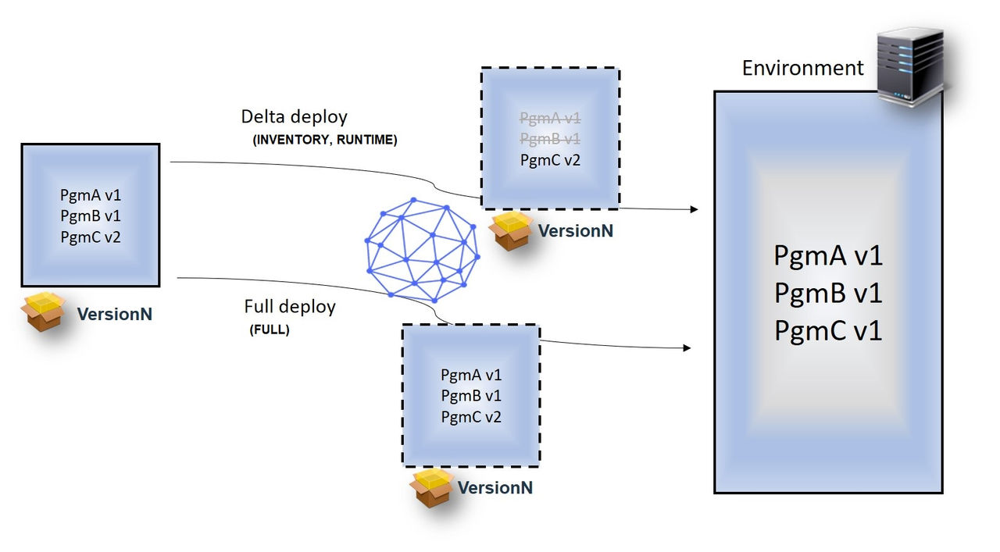

Deploying components to the z/OS platform
Use the toolkit to deploy to the IBM® z/OS® platform.
Before you begin
About this task
When you create a component for z/OS artifacts, select z/OS as the component type.
Versions can be imported to a z/OS component by using the z/OS File source configuration plug-in or by using the buztool command line from an z/OS agent.
Two or more z/OS component versions can also be merged from a snapshot into one to simplify the deployment to the next environment. Refer to Merging z/OS component versions.
In your application process with the components to deploy, configure the Deploy Data Set process step as either a FULL, INVENTORY, or RUNTIME deployment for z/OS data sets and HFS files.

A FULL deployment type replaces all artifacts with artifacts in the current component version.
An INVENTORY deployment type, or delta deployment, reduces deployment time significantly by deploying only the changes between artifacts.
A RUNTIME deployment type is a delta deployment that uses checksum logic to compare artifacts to be deployed with the same artifacts in the target environment. This check is done for every artifact. Only artifacts with checksums that don't match are considered as changed and used for deployment.
For each artifact in a delta deployment, the following attributes are compared to the latest inventory version of the same artifact.
| Parameter | Where Used | Description |
|---|---|---|
| Last Modified Timestamp | INTENTORYRUNTIME | Deploy reads the Last Modified Timestamp value when the version is packaged. All load modules that are build by RTC have Last Modified Timestamp values stored in SSI. If SSI has no Last Modified Timestamp values, ZLM4DATE, ZLMTIME and ZLMSEC statistical values are read from ISPF. Note that the JCL-built or third-party tool load modules have a Last Modified Timestamp value of NO. |
| Custom properties starting with SYS.id (aka identification properties) | INVENTORYRUNTIME | These properties provide an open framework for the customer or provider to add additional attributes to indicate whether two artifacts are the same. For example, with these properties you can add hash or binder information in the future. Two artifacts are considered the same when all attributes that are used for comparison match exactly. |
| checksum | RUNTIME | The checksum value is determined when the version is packaged. During a RUNTIME deployment, the checksum is calculated for the artifact in the target environment and compared with the checksum calculated during the version creation. |
Procedure
What to do next
To learn more about the z/OS Utility plug-in, see the IBM plug-in site.